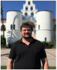
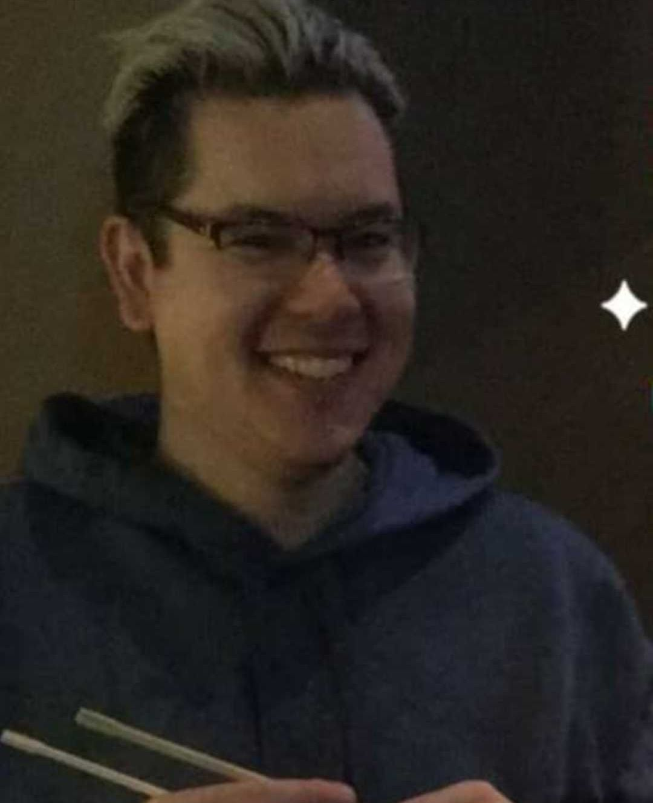

Junior Software Test Engineer at Holland AI LLC since 2023

Picture from 2023
| Colin Brown | Master Student and Research Assistant-Scientist 2020–2023 Junior Software Test Engineer at Holland AI LLC since 2023 |
| Picture from 2023 |
Colin was a research assistant and research scientist at the Luque lab from April 2020 to August 2023. Colin joined the lab to do research as part of his Master’s thesis in physics, and he expanded his scope by developing geometrical and physical models to investigate the protein shell protecting the genome of viruses. He led the release and publication of pyCapsid in Bioinformatics and contributed to two additional research projects on viral capsids, yielding two co-author publications in Microorganisms and bioRxiv. Colin’s position was supported by research funds from the National Science Foundation and the Gordon and Betty Moore Foundation. He received his Master’s in Physics from San Diego State University in 2023. |
| Anuradha Agarwal | Lab Technician 2022–2023 Data Management Specialist at J.P. Morgan since 2023 |
 Picture from 2023 |
Anuradha (Anu) was a lab technician and manager at the Luque lab from January 2022 to May 2023. In the lab, Anuradha (Anu) was responsible for implementing, maintaining, and developing the data, computational, and culture processes operating in the lab. She developed extensive protocols and lab documentation and contributed to the first online release and publication of pyCapsid in Bioinformatics. Anu’s position was supported by research funds from the National Science Foundation and the Gordon and Betty Moore Foundation. Anu received her Bachelor of Science in Mathematics from Rudgers University in 2021 and her Master in Computational Science from San Diego State University in 2023. While in the lab, she loved learning new languages and painting. |
| Amartya Yalla | Master Students And Assistant Lab Manager TBD |
| Picture from 2023 |
Amartya, a Masters student studying computational science at San Diego State University(SDSU), joined the lab in 2023 as an assistant lab manager, helping to carry out and execute operational tasks. He will be completing his masters degree in 2024. |
| James Mullinix | PHD Student 2015-2020 TBD |
|  Picture from … |
Description TBD. |
| Aurora Vogel | Masters Student 2021-2023 TBD |
 Picture from … |
Description TBD. |
| Brandon Ricafrente | Masters Student 2020-2023 TBD |
|  Picture from … |
Brandon was a physics masters student who joined Luque Labs in 2020 to to study viral capsid assembly, after obtaining a B.S. in Physics with a minor in Math from University of California Riverside (UCR). |
| Caitlin Bartels | Undergraduate Student 2020-2023 Clinical Medical Assistant at OC Spine and Sport Medicine since 2023 |
 Picture from … |
Caitlin was Biology undergrad at San Diego State University (SDSU) who joined Luque Labs in 2020 in the amidst of the Covid-19 pandemic, wanting to learn more about viruses. During on her time in the lab, she worked on a wide array of projects specifically related to capsid architecture and herpesvirales latency. She is currenty on tract to apply to medical school this coming cycle. |
| Vaishnavi Patel | Undergraduate Student …-… TBD |
| Picture from … |
Description TBD. |
| Kevin Joiner | Ph.D. Student and Research Assistant-Scientist 2015–2019 Research Scientist at the Naval Information Warfare Center (NIWC) since 2020 |
 Picture from 2022 Google Scholar |
Kevin joined the lab as a Ph.D. student in 2015. In the lab, he developed new computational and mathematical approaches to investigate the interaction of phages (viruses of bacteria) and their bacterial hosts in mucus, producing one first-author publication in Scientific Reports. Kevin’s position was supported by his DoD SMART Scholarship, the National Science Foundation S-STEM program, and the CSUPERB program. He completed his joined Ph.D. in Computational Science from San Diego State University & Claremont Graduate University in 2019. |
| Nicole Tomassi | Undergraduate Student and Research Assistant Ph.D. Candidate in Computational Neuroscience at Boston University since 2019 |
 Picture from 2022 |
Description TBD. |
| James Hellfeier | Undergraduate Student and Research Assistant Senior Analyst, Manager at LPL Financial since 2021 |
 Picture from 2019 |
Description TBD. |
| Max Anthenelli | Undergraduate Student and Research Assistant Ph.D. Student in Education Policy and Leadership at the University of Maryland since 2022 |
 Picture from 2019 |
Description TBD. |
| Fanwei (Ashley) Meng | Undergraduate Student and Research Assistant Software Engineer at Warner Bros. Discovery since 2021 |
 Picture from 2019 |
Description TBD. |
| Luke Turner | Undergraduate Student and Research Assistant Optical Engineer at Airy Optics, Inc. since 2022 |
| Picture from 2019 |
Description TBD. |
| Emily Jasien | Master Student and Research Assistant Non-disclosable Information |
| Picture from 2017 |
Emily Jasien joined the lab to work on her research thesis Modeling the transition between lytic and lysogenic behavior in a bacteria-phage system. She completed her Master’s in Applied Mathematics from San Diego State University in 2017. |
| Marcelo Sevilla | Master Student and Research Assistant Business System Analyst at TechFlow, Inc since 2023 |
 Picture from 2019 |
Marcelo joined the lab in 2015 to study the major capsid protein of viral capsids as part of his Master in Computational Science. |